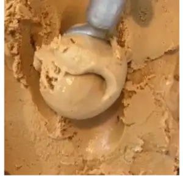
Gelato
O Sabor da
Felicidade
Gelatos artesanais preparados com ingredientes
selecionados e açaí premium, direto do coração da praia
para o seu paladar.
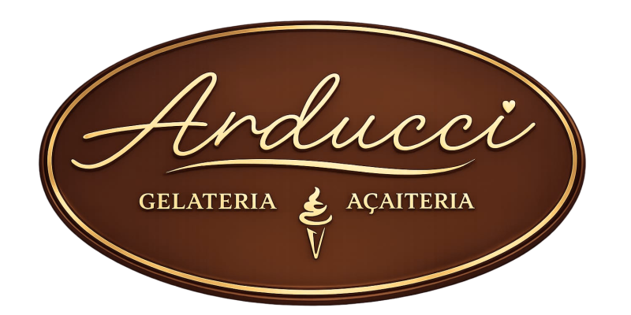
Gelatos artesanais preparados com ingredientes
selecionados e açaí premium, direto do coração da praia
para o seu paladar.
Nossos Produtos

Gelato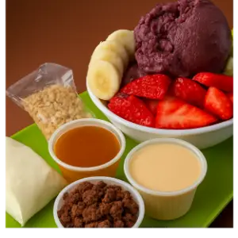
Açaí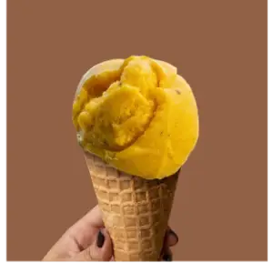
Cascão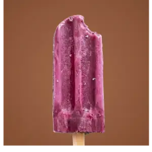
Picolés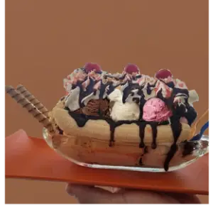
Banana Split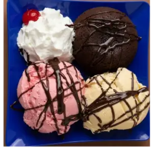
Petit Gateau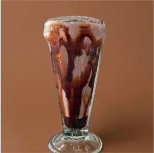
Milk Shake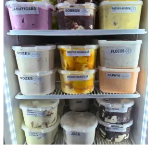
Potes para Viagem♡ Feito com Carinho
⌁ Ingredientes Naturais
♢ +30 Sabores
Nossa História
A história da Arducci começou em 2002, quando o casal Mônica e Antonio (Neto) fundou a Gelateria Havana, inicialmente com sorvetes industrializados. Com o tempo, a busca por qualidade levou Antonio a se especializar na produção artesanal, investindo em conhecimento, tecnologia e na criação de produtos feitos com ingredientes selecionados e frutas de verdade.
Ao longo dos anos, a marca evoluiu e fortaleceu seu compromisso com a excelência. Mônica, em sua formação em Nutrição, trouxe ainda mais embasamento técnico e um olhar voltado ao bem-estar dos clientes, contribuindo para o desenvolvimento de produtos com mais qualidade e cuidado.
Após mais de 20 anos de história, em 2026 a marca se transforma em Arducci, unindo tradição e renovação. O nome nasce da união de Arthur e Eduarda, com inspiração nos sobrenomes italianos, representando uma nova fase, sem perder a essência: oferecer gelatos, picolés, paletas e açaí com autenticidade, sabor e qualidade artesanal.
Foto 1 de 10
Rota Gastronômica Costa da Mata Atlântica e Litoral Norte de São Paulo
Gastronomia, território e reconhecimento para Praia Grande.
A Arducci Gelatos, de Praia Grande, foi selecionada para integrar a Rota Gastronômica Costa da Mata Atlântica e Litoral Norte de São Paulo, iniciativa que valoriza a gastronomia, a cultura e os ingredientes dos destinos do litoral paulista.
A iniciativa é realizada pela Secretaria de Turismo e Viagens do Estado de São Paulo , em parceria com o Mundo Mesa e o Senac São Paulo . O processo contou com visitas técnicas e avaliações dos estabelecimentos participantes.
Entre os diferenciais apresentados pela Arducci estão os gelatos artesanais 100% fruta, com sabores como Jaca, Maracujá, Amora e Limão, além do tradicional Açaí. A variedade e o cuidado na produção foram alguns dos elementos que destacaram a gelateria durante o processo.
No dia 14 de setembro, às 11h20, a Arducci recebeu o Press Trip da Rota Gastronômica, com 13 profissionais entre jornalistas, influenciadores, agentes de turismo e equipe de produção. Entre os participantes estavam representantes da Folha de S. Paulo, Prazeres da Mesa , Mães em Viagem, além de influenciadores e agentes de turismo. A Arducci também recebeu a visita da equipe de marketing do Palácio das Artes. Foi um dia especial para compartilhar nossa história, apresentar nossos gelatos artesanais e receber o feedback dos convidados, fortalecendo a presença da Arducci na gastronomia e no turismo de Praia Grande. A participação também ganhou espaço em canais como e nos canais oficiais de Praia Grande .
A programação também levou a Arducci à Semana Sabor de São Paulo, com participação na Trilha do Conhecimento, que reuniu palestras, rodada de negócios e aula-show com o chef Eudes Assis , padrinho da rota.
Esse reconhecimento representa uma conquista construída junto aos clientes, parceiros e todos que acompanham a história da Arducci, levando a identidade do gelato artesanal de Praia Grande para um projeto que valoriza a gastronomia e o turismo regional.
Você sabia que o gelato é diferente do sorvete?
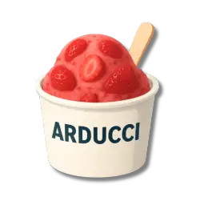
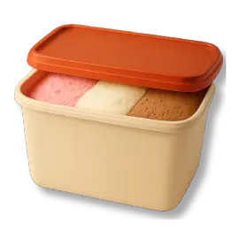
Fale Conosco
Av. Pres. Castelo Branco, 6920 Cidade Ocian, Praia Grande/SP
Todos os dias
14h às 23h
Respeitamos a sua privacidade. Os dados enviados por este site, como nome, telefone ou mensagem, serão usados apenas para atendimento, pedidos, dúvidas ou contato com a Arducci.
Não vendemos, compartilhamos ou divulgamos seus dados pessoais para terceiros sem autorização, exceto quando necessário para cumprir obrigações legais.
Ao entrar em contato conosco, você concorda com o uso das informações fornecidas para que possamos responder sua solicitação, conforme a Lei Geral de Proteção de Dados — LGPD.
Falar com a Arducci